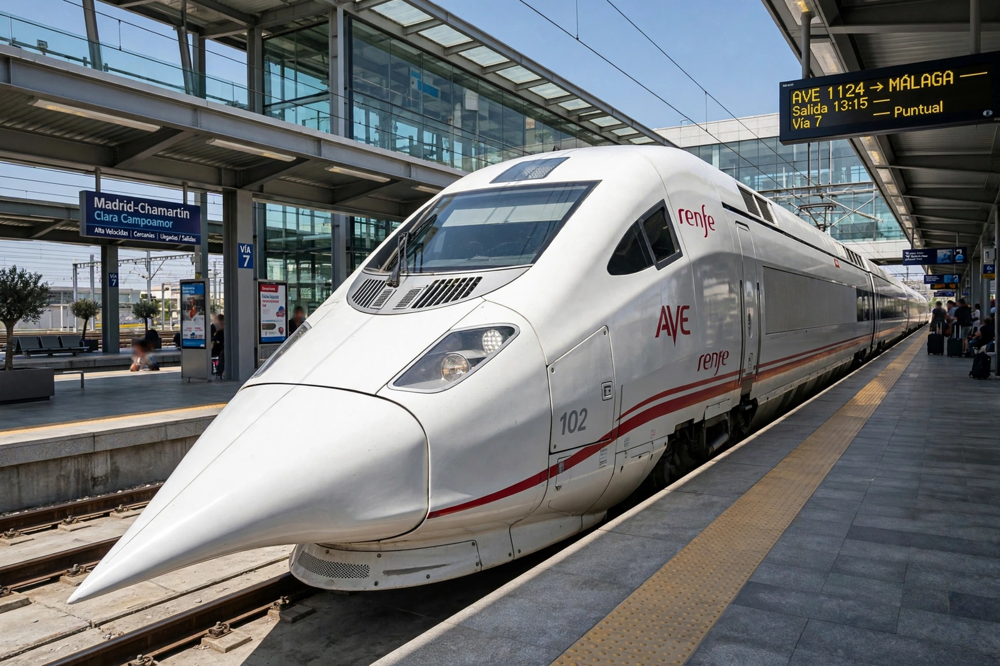

Alta Velocidad Española (AVE) is a high-speed rail service operated in Spain by the state railway company Renfe. AVE trains run on a network of dedicated passenger high-speed rail lines (LAV) built to standard gauge (1,435 mm) rather than the traditional Iberian broad gauge, allowing international interoperability. The name is also a play on the Spanish word ave, meaning "bird". Spain's high-speed network is the largest in Europe and the second largest in the world after China's, extending to more than 3,900 km (2,400 mi) of lines.

| Operator | Renfe |
|---|---|
| First service | 21 April 1992 (Madrid–Seville) |
| Network length | Over 3,900 km (Europe's largest high-speed network) |
| Track gauge | 1,435 mm standard gauge |
| Maximum speed | 310 km/h in commercial service (design 350 km/h) |
The first line, from Madrid to Seville, opened on 21 April 1992, in time for the Seville Expo '92, using Class 100 trainsets derived from the French TGV. It was followed by the Madrid–Barcelona line (completed to Barcelona in 2008, and onward to the French border at Figueres in 2013), the lines to Valencia and Alicante, Málaga, Valladolid and the north-west, and services to Galicia (2021). In 2021–2022 the market was liberalised, with low-cost and competitor services (Renfe's Avlo, Ouigo España and Iryo) joining the classic AVE brand on the busiest corridors.
AVE services use several trainset families, including the Talgo-derived Class 102/112 ("Pato", duck, for its bill-shaped nose), the Siemens Velaro E Class 103, which reached 404 km/h in testing — a Spanish rail speed record — and the Class 106 Avril. Trains offer onboard catering, power sockets and, increasingly, free Wi-Fi. The network is managed by the infrastructure administrator Adif.